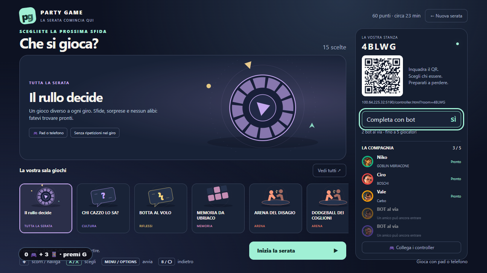
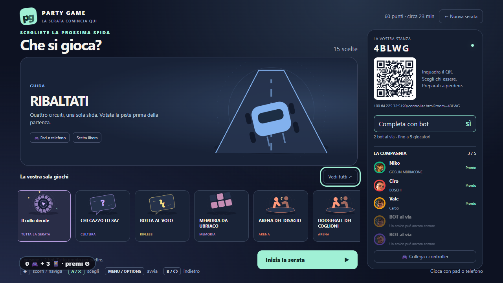

La compagnia, con o senza bot.
Scegliete i posti totali e attivate «Completa con bot» nella stanza. Tre persone e cinque posti diventano tre persone più due bot. Disattivandolo giocate soltanto voi.

Un solo Ribaltati. Quattro piste.
Litorale, Arcobaleno, Sydney e Primo Karting restano nel voto mappa prima della gara.

Apri il gioco · Verifica interfaccia · Build